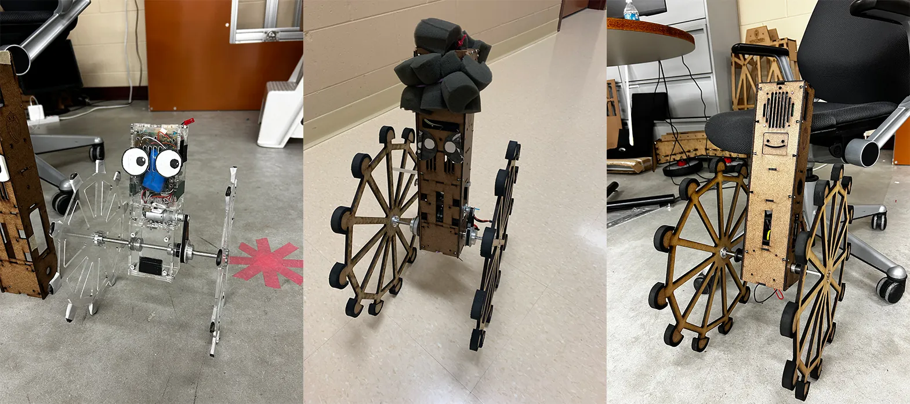
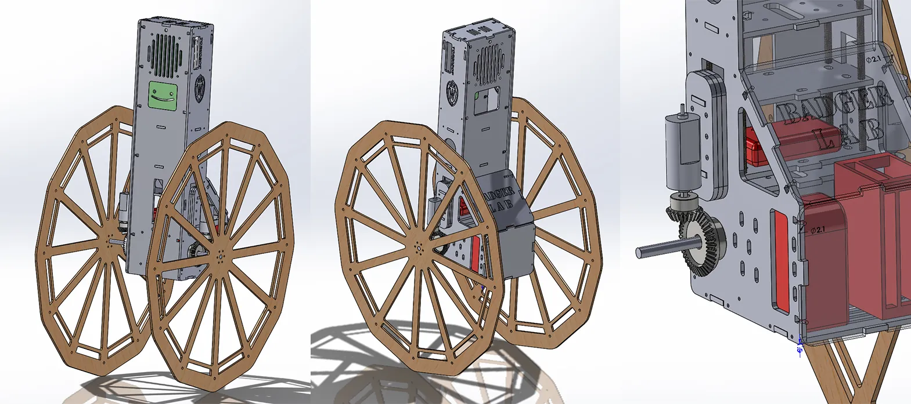

Torsobot
Overview
Torsobot is a self-balancing rimless wheel robot built to investigate fundamental properties of human walk cycle. I enhanced its stability using PID control, redesigned and built its curret chasis, and implemented a dual gear drive system.
The robot is programmed with ROS and operates on a combination of Raspberry Pi and Arduino.


Bevel Gear Dual Drive
The updated design replaces the previous system's pulley belt drive, which consistently introduced noise due to slippage issues, with a bevel gear dual drive system to enhance efficiency and reduce noise. Additionally, I designed a "backpack" that secures its battery, sensors, and regulator in place while also allowing easy access.
Push-off Mechanism
I also designed an independent push-off mechanism using crank-piston linear actuators. Suspended from the wheel shaft, this system harnesses torque from the wheels to deliver a consistent "kick" each time Torsobot's "feet" is about to leave the ground, independent of its lean angle.
Similar work

E-Ducati-On
E-Ducati-On is an educational robotics platform designed to teach students about robotics, programming, and controls.

T-Bone: Fish Tail Inspired Robot
Biomimetic underwater robot inspired by fish tail propulsion, designed for efficient aquatic locomotion and maneuverability.

Cheap Opensource Robot Dog (CORD)
Open-source quadruped robot platform designed for educational purposes and affordable robotics research.